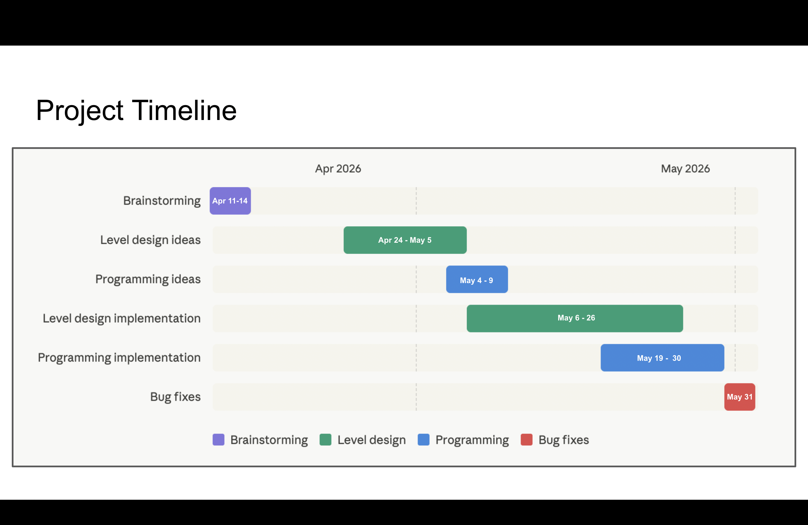
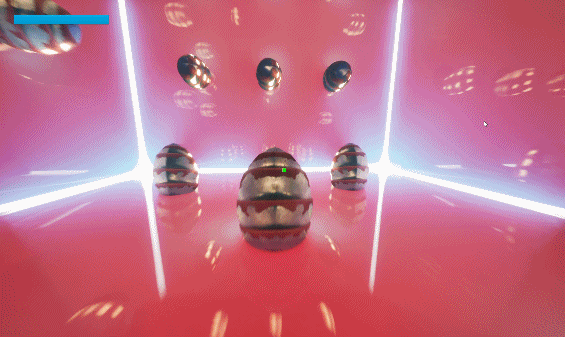

Die See Level
Game Development — Group Project
Overview
Die See Level, a PlayStation Career Pathways Game Jam project developed using Unreal Engine 5.7.4 to create an immersive gaming experience.
It is a first-person 3D platformer game that involves puzzles and combat combined with gravity changes. The game introduces a fantastical use of the tool called level, which is used to detect orientation in real life but is used to change orientation/gravity in the game.
Die See Level won the 1st place in the Rachet-it-up Game Jam competition as a Grad team project, showcasing its innovative gameplay and design.
My contributions to the project:
1. Manage the project and make sure it stays on track with the timeline and deliverables.
2. Set up colliders and developed egg hatching systems using the combincation of C++ and blueprints.
3. Connected start screen with cinematics and gameplay level using blueprints.
Tech Stack
- C++
- Blueprints
- Unreal Engine

Project Details
Gantt Chart

One of the biggest challenges of this project was coordinating a five-person team across three time zones while navigating final exams and graduation schedules. Before the semester ended, we held weekly in-person meetings to build team rapport, then transitioned to online collaboration afterward.
Through this experience, I learned that being in a leadership role does not mean simply organizing things my way and expecting others to follow. As a producer, part of my responsibility is making sure the team feels comfortable with our tools and workflow. When coordinating meetings through group chats became difficult, I adapted by using When2meet and Google Calendar invites to make scheduling more accessible and reliable. Based on feedback from teammates, I also reorganized our Discord into separate channels and roles and used email when it better suited individual communication preferences.
Even on a small game jam project, producing taught me the importance of taking care of the team behind the game. Being willing to adapt my processes to different teammates’ needs helped create a calmer, more comfortable working environment and ultimately supported a smoother development process.
Ideation to Implementation
Being part of this project also helped me understand the importance of having a clear creative direction. Establishing a shared vision for the game helped us define the scope and make more focused design decisions. During our brainstorming sessions, we explored many different ideas before choosing a level as our main tool. We felt it fit the game jam theme well while giving us an opportunity to experiment with unusual gameplay mechanics.
Our goal was to create gameplay inspired by the hallway fight scene from Inception, where players physically rotate the level in their hands to change the direction of gravity while continuing to fight enemies. With a clear understanding of the experience we wanted to create, we decided to focus our scope on the game's technical challenges rather than attempting to build a fully featured game within a few weeks. Our goal became creating an impressive technical demo that demonstrated the core concept, and we were proud of what we accomplished.
In the final build, we successfully implemented:
- A gyroscope-supported gravity system that changes the direction of gravity when the player rotates the controller beyond a certain angle.
- Enemy combat logic and pathfinding that continue to function after the gravity plane changes.
- An Actor Dynamic Gravity Component that allows objects using the component to change their gravity direction dynamically, just as the player does.
Documentation
Another important part of my role as a producer was project documentation and repository management. I managed the project's GitHub repository and maintained a casual design journal to record meeting notes, discussions, and important decisions throughout development.
Alongside these day-to-day records, I also maintained a more structured Game Design Document (GDD) that organized information related to game design, art assets, level design, and other aspects of production. Keeping both forms of documentation helped us preserve important decisions and maintain a shared source of information that the team could reference throughout development.
Additional Programming (Egg Hatching)

I also contributed to the engineering side of the project, primarily implementing the egg-hatching system using a combination of Blueprints and C++. I set up the egg colliders in the Unreal Editor and used Blueprint to handle the player-egg collision detection. I also implemented the game flow from the start screen UI to the opening cinematic and into gameplay, ensuring a smooth transition between each stage of the player experience.
For the underlying gameplay logic, I used C++ to handle enemy spawning and the egg-hatching sequence, where custom functions allowed us to organize and control the behavior more effectively. Splitting the system between Blueprint and C++ allowed me to use each tool where it was most effective while keeping the implementation manageable.